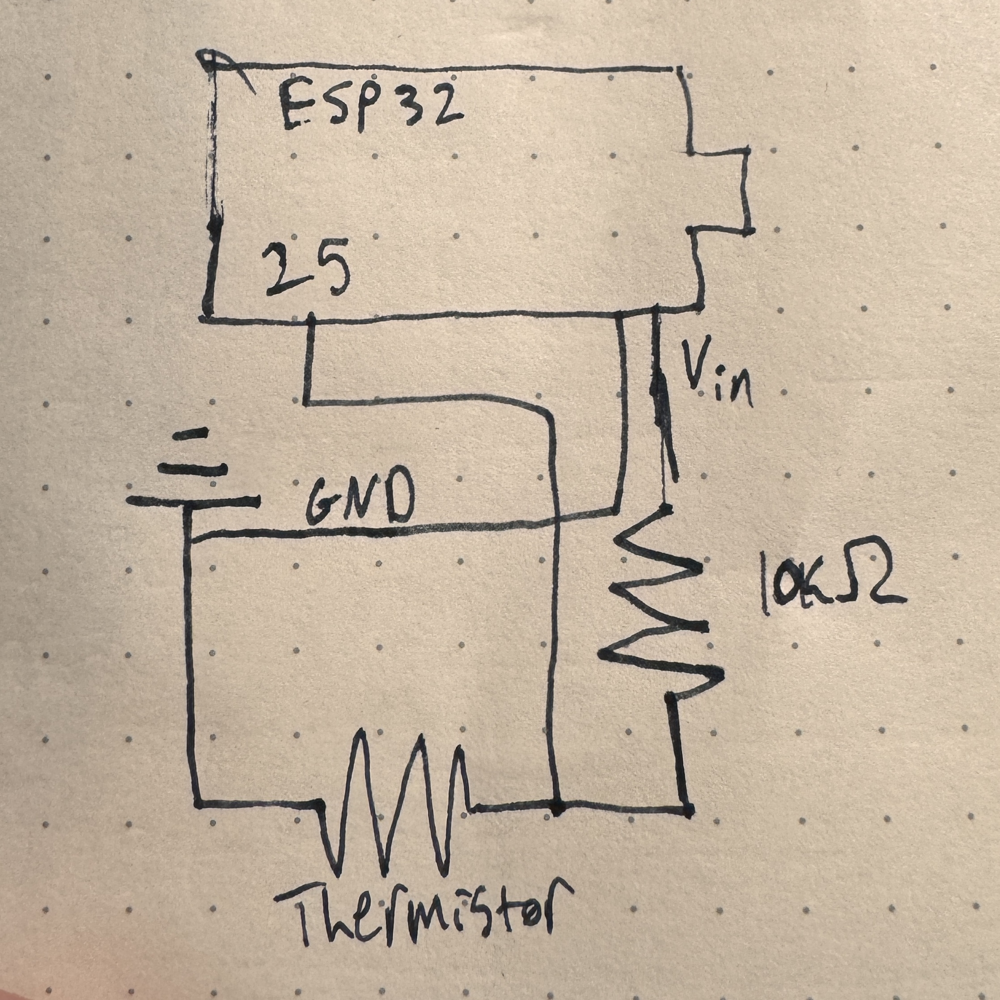
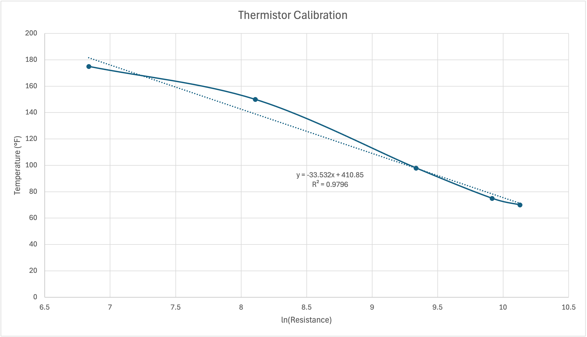
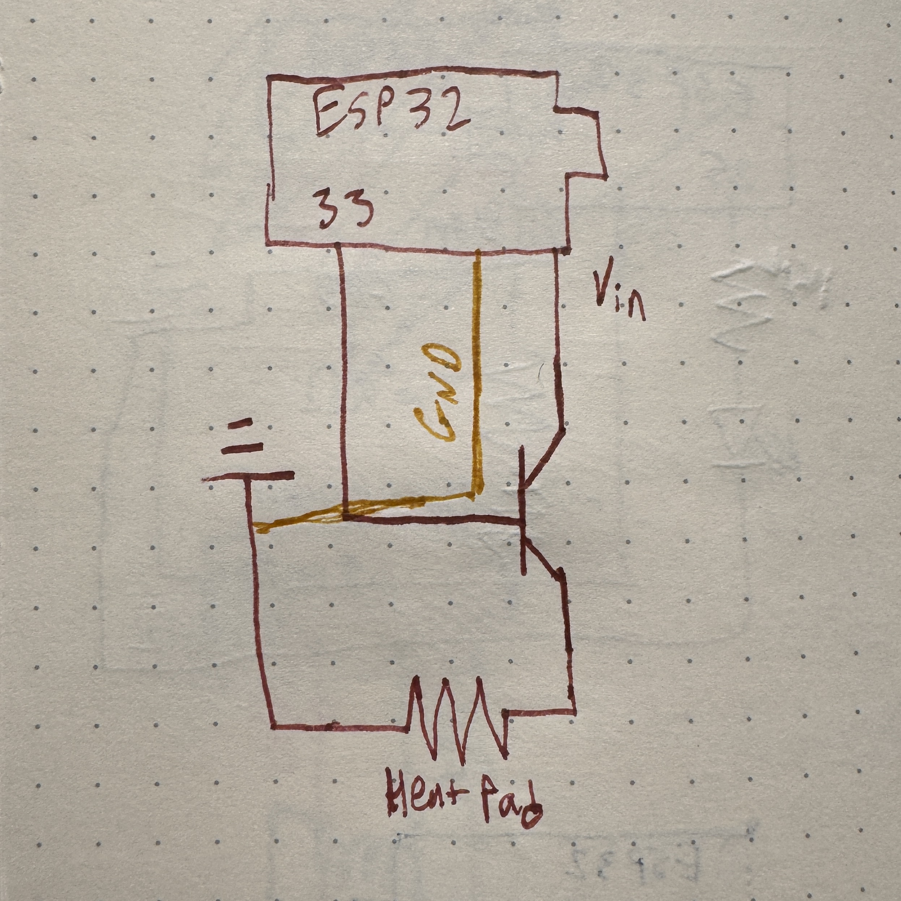
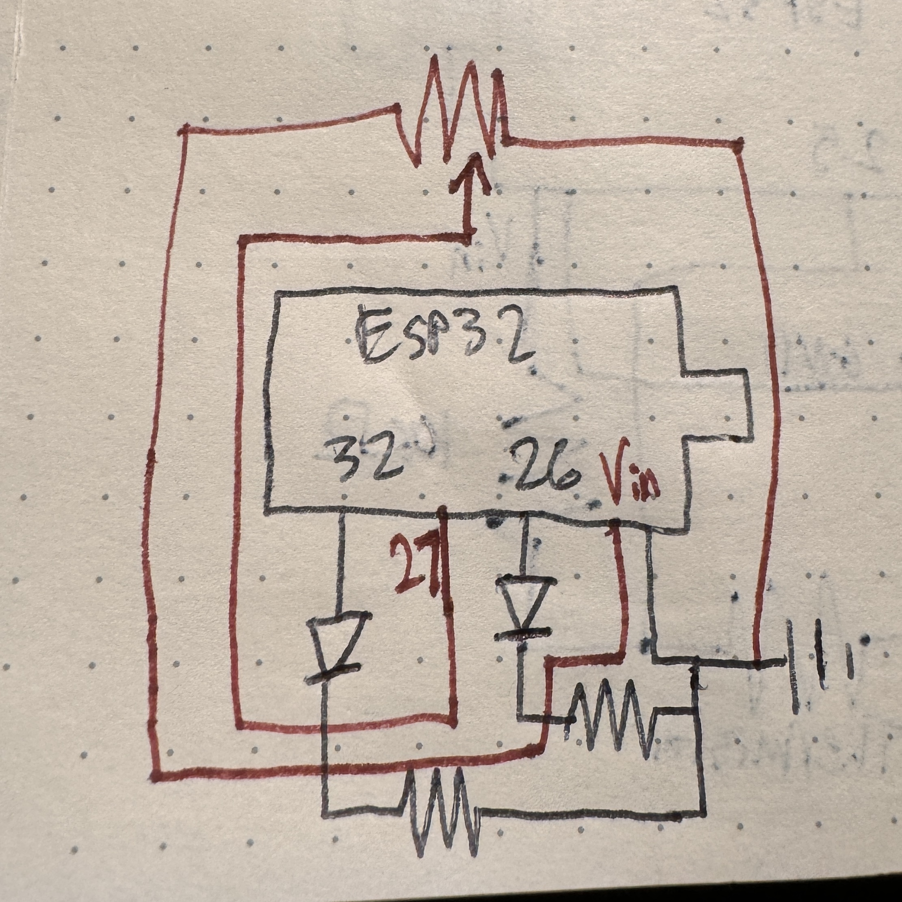
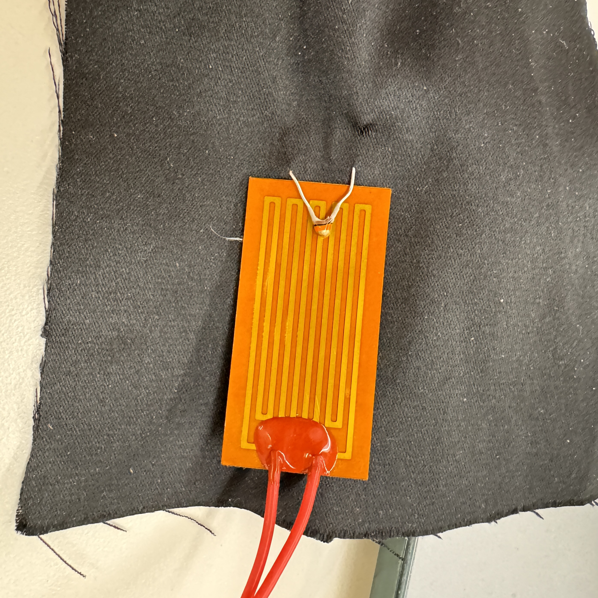
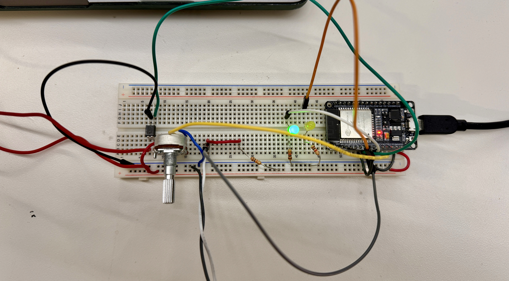

Assignment: Minimum Viable Product for Final Project
Oh baby, it's a big one - it's MVP week. We were told to tackle the most challenging part of the final project - a somewhat daunting task to receive during thesis crunch time, but nonetheless more specific than some other weeks. With some help from Bobby and a little common sense, I began to do exactly that. I knew that I wanted my MVP to have something to do with the heating element and control of that because that seems like the most technically challenging part of my project other than dealing with power, which will only be a problem once I have the final materials for the project. Sidenote, I honestly think that the sewing part of this project might take me the longest/be the most challenging for me because I have literally no experience with that, but that didn't feel like the vibe of the MVP, so I stuck with the heating element. We also don't have the big heating pads in stock that I want to use, but we do have little itty bitty ones, so I used that for a proof-of-concept that my heating circuit and code will work. The first step that I took to accomplish my MVP was to get a thermistor up and running - a crucial step to avoid setting myself on fire. This involved calibrating the thermistor, and, as I sat in front of the toaster oven while Kassia was trying to teach her lab around me, I found myself wondering why I didn't just do this for the sensor week. Regardless, I didn't, so I needed to do it now. I built a basic thermistor circuit with a voltage divider following the one we have on the PS70 website. Once I pinched it a few times to confirm it was working, I got to calibrating it. I wanted it to be really honed in on the 90-150ish °F range because I feel like that will be the most important, but that proved to be pretty difficult. I think that a massive improvement to this project in the next iteration will be having higher quality thermistors that are more accurate and precise. Here is the circuit diagram for just the thermistor circuit below - there are a bunch of different circuits all on the overall breadboard, so I think it will be much easier to understand for both of us if I break it up.

I started the calibration process by attaching the thermistor to some alligator clips and sticking it in the toaster oven at its lowest possible setting, 150°F. I wrote my thermistor code so that it was reporting a rolling average of the temperature to minimize noise in the same way that I did for the last assignment. Even with this rolling average, I could not get the thermistor to report a consistent reading while in the toaster oven, even after the oven reached a theoretically constant temperature. The readings would follow a roughly sinusoidal pattern, rising and falling but never settling on a consistent value. Because I wanted to establish an upper limit for the temperature (I don't want the temperature to exceed a threshold), I chose a value that was slightly higher in the range that the values were oscillating between and wrote that as the resistance value at 150°F. I repeated this process again at 175°F and recorded another resistance value. I would have kept going here, but I was realizing that this thermistor likely would not be my final one as I will eventually want a more precise and accurate one, so I decided to continue at lower temperatures to get the other part of the domain. I measured "room temperature" in a cold room and warm room, estimating their real temperatures, but interestingly, the thermistor reached more of an equilibrium in these scenarios than in the oven, and I measured it in my armpit, which I decided was approximately 98°F. With these values, I plotted temperature vs the natural log of the resistance value (to linearize the relationship) and found a best fit line, which I established as the equation to transform resistance values into an accurate temperature for this thermistor. This can be seen below.

Once I inputted this equation as the transformation from resistance to temperature, it started to produce some reasonable values for things! I'm sure it could be better, but that will be for future iterations. I then moved on to figuring out the heating pad. Naively, I just plugged in the heating pad to a pin on the ESP32 that I set as an output pin and hoped that I could set the output to high and have the heat pad heat up. I wasn't totally wrong, but it definitely didn't work. After getting stuck for an hour (the amount of time Nathan said was acceptable to be stuck for), I asked Bobby to inspect it, and he immediately was like this is the wrong voltage. The frustrating part is that I knew that this was true from all of my research to build the bill of materials, but I just hadn't thought about the fact that that could be what was causing the issue. Anyways, glad that I asked, I began playing out with transistors to see if I could still use that 3.3V pin to control the heat pad while using 5V to actually power the heat pad. After realizing that transistors are directional, we got exactly that to work - the heating pad would heat up when I told it to! The circuit for this is below.

At this point, I had an extremely minimal project, but it was starting to come together. The next step was to get the thermistor that could now accurately read temperature to control the heat pad that could now produce heat. With a little bit of simple coding, I was able to get my heat pad to stay within a predetermined threshold. While the thermistor read a temperature lower than the threshold, it would heat up the pad until it reached the target temperature. Once it reached the target temperature, it would turn off the heat pad until it fell below the target temperature, and it continued to oscillate around the target temperature in this way, reaching a quasi-steady state of temperature. This worked! Unfortunately, I had written this without using the C++ class structure, so I rewrote the code to do exactly the same thing, but using the class structure. I had just created a truly minimum viable product that could heat up a heat pad to a specified temperature and hold it there indefinitely. To make this MVP slightly less M and slightly more V, I also added indicator LEDs to show when the temperature was within 1° of the target temperature (this was the buffer zone that I established that is deemed the correct temperature) and when the heat pad was on, even if it was within the buffer zone. This helps to understand how the heat pad itself is working and maintaining the target temperature. I also added a potentiometer, so that I could adjust the target temperature on the fly and not have to reupload the code each time, manually hardcoding it. I set the potentiometer to correspond to a range of temperatures that is dynamically updated with the different values of the pot ranging from 75-95°F, although with the current voltage limitations, getting above 90ish is tough. This will be fixed with a better power system. This all worked totally perfectly. No matter how I set the temperature using the pot, the heat pad would respond appropriately in order to attempt to get to and then oscillate around the target temperature. Here is the schematic of those things.

The only thing left was to make it look a little bit pretty. I attached the thermistor and heat pad to a piece of stretchy fabric that I found in the fabric box that closely resembles the kind of material that I eventually want the vest to be made out of. This held the thermistor against the heat pad, which may or may not be the case in the final version, but it is the best arrangement for testing and demonstrating when I am not wearing the heat pad in an enclosed space. With this all buttoned up, I had a better MVP than I thought that I would when I started! See it in action (to the best of my abilities) below.


It works!!
It works!!
Once all is said and done, I hope for the project to look something like this. In this model, the red patches are the heat pads (to scale), the silver box is the battery (to scale), the blue box is the control box that will house the microcontroller, temperature controls, and the display (approximate scale), and the grey dot is the thermistor (approximate scale).
I also looked at the LED that lights up whenever the heat pad is turned on with the oscilloscope. Since it is not constantly on and is on for different periods of time each time, the idea of a time domain is not super applicable to this. However, I was able to look at the square waves indicating when the heat pad is on, and it showed me that the pad is turned on for ~125-250ms at a time. It is not on a fixed clock. This shows exactly how the heat pad is being pulsed on and off to maintain a constant temperature.